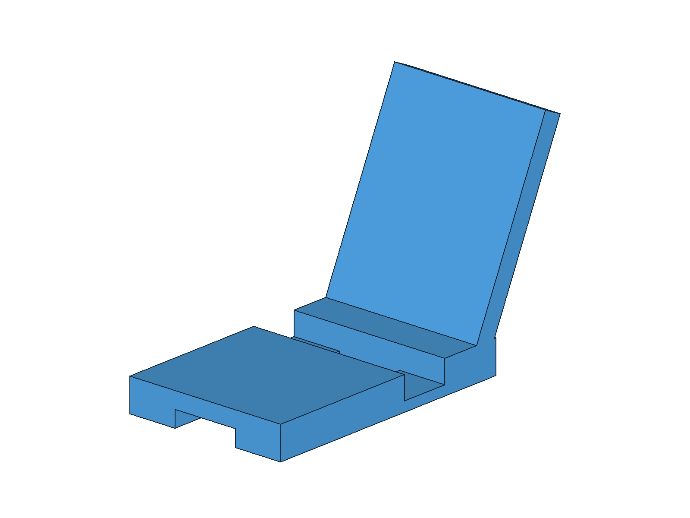

⚙️
模块四
结构设计、装配间隙与运动验证
4课时 · 第10-13课 · 技术实践
⚠️
课前预习！
📖 课前预习
- 复习for循环和def函数
- 了解『参数化』：变量控制尺寸
- 了解布尔运算：fuse合并/cut挖空
- 构思手机支架和带盖储物盒设计
📐
参数化设计
所有尺寸用变量，改变量就改模型
box_L = 60 # 盒体长度 wall_T = 2.5 # 盒体壁厚 groove_W = 3.2 # 盒盖环形槽宽 clearance = 0.35 # 单侧装配间隙
➕
fuse布尔并
合并两个几何体
import Part box = Part.makeBox(45, 20, 3) ring = Part.makeCylinder(7, 3, FreeCAD.Vector(45, 10, 0)) body = box.fuse(ring) # 合并 Part.show(body)
➖
cut布尔差
从一个几何体减去另一个
outer = Part.makeBox(60, 40, 35)
inner = Part.makeBox(55, 35, 33,
FreeCAD.Vector(2.5,2.5,2.5))
box_body = outer.cut(inner) # 形成有底盒体
Part.show(box_body)
🧩
多实体与装配间隙
盒体、盒盖保持独立，盒沿进入环形槽
groove_W = wall_T + 2 * clearance # 2.5 + 2×0.35 = 3.2mm # 两侧各留0.35mm，避免零间隙干涉
📦
FreeCAD原生Assembly装配
盒体接地 · 盒盖固定关节 · 干涉体积为0

📦
实践作业5：带盖储物盒
盒体+盒盖·环形槽·原生装配
STEAM融合点：T技术 + E工程 + M数学（装配、槽宽与间隙）
📐 参数
盒60×40×35 槽宽3.2 间隙0.35
🔧 技术
抽壳+多实体+Assembly固定关节
📝 评分
完成度40+技术40+规范20
📱
实践作业4：手机支架
能放手机·充电线开口·圆角
STEAM融合点：T技术 + E工程 + M数学（结构需求与25°倾角）
📐 参数
底座80×50×10 背板高55 后倾25°
🔧 技术
一体结构+后倾背板+充电槽+稳定性
📝 评分
完成度40+技术40+规范20
📦
带盖储物盒参考样件
📱
手机支架参考样件

🎞️
第13课：装配运动验证
对象树
AssemblyObject
Grounded + Fixed Joint
槽口
槽宽3.2mm
单边间隙0.35mm
证据
干涉体积0
开合动画+对象树截图
🎯
本模块总结
- 参数化设计 = 变量控制尺寸
- 布尔运算 = fuse合并/cut挖空
- 多实体设计 = 盒体与盒盖保持独立
- 原生装配 = 接地+固定关节+间隙检查
- 完成手机支架+带盖储物盒2件作品
- 👉 下一步：桥梁跨学科项目、FEM与打印验证